Antes de explicarmos efetivamente como usar o nosso querido git, vamos a uma breve explicação do que
é
esse
sistema:
Git é um sistema de controle de versões gratuito e de código aberto.
É amplamente usado em todo o mundo, devido a facilidade que proporciona aos desenvolvedores,
possibilitando,
graças ao seu armazenamento na nuvem,
o trabalho de inúmeras pessoas em um mesmo projeto simultaneamente.
Foi criado em 2005 por Linus Torvalds, o também fundador
dos sistemas operacionais Linux.
Linus Torvalds - O Pai do Git
Logo do sistema de controle de versões Git
Principais Comandos
Configurações iniciais / Utilitários
Antes de começarmos a utilizar o sistema de controle de versões Git, é essencial fazer algumas
Configurações iniciais.
1- git config
O comando git config é utilizado no sistema de controle de versões para configurar opções
específicas do usuário, repositório ou sistema. É importante que o seu nome de
usuário e e-mail estejam configurados de forma correta a fim de facilitar a comunicação
durante a realização de um projeto no Git.
Exemplo:
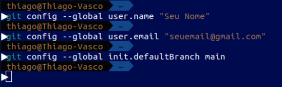
*Além da configuração padrão do username e e-mail, é boa prática trocar o nome da branch
padrão de master para main, visto que é a norma utilizada atualmente.
É importante ressaltar que o comando git config pode ser usado para fazer configurações
específicas a um repositório, ou para o âmbito global da sua máquina. A opção --global é
o que faz a configuração escolhida atuar para todos os repositórios, sem ele, as mudanças são
locais.Também vale lembrar as diversas funcionalidade do comando, podendo ser usado para listar
as configurações atuais com --list, pode ser usado também com --get, afim de emitir algum desses
tópicos individualmente, dentre outras funções que você pode conferir com a execução do próximo
comando da nossa lista.
2- git help
O comando git help é usado para obter ajuda sobre os comandos do Git. Quando você
executa git help, ele exibe informações sobre como usar o Git, incluindo uma lista de
comandos e opções disponíveis, além de fornecer uma descrição detalhada de cada comando. Se
você deseja conferir os usos de um comando específico, basta digitar "git help
nomedocomando" e o Git irá abrir um manual com a descrição e todos os usos do comando
desejado.
Exemplo:
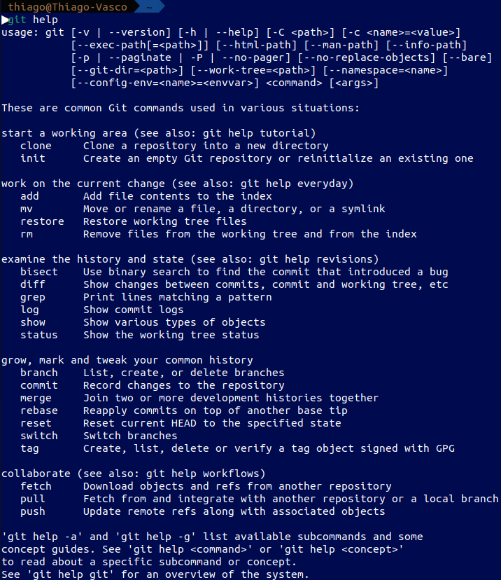
3- git diff
O comando git diff compara as diferenças entre o estado atual do seu repositório Git e o
último commit, mostrando as mudanças entre eles. Também pode ser usado para
checar as mudanças entre diferentes branchs e de commits passados para commits
recentes.
Exemplo:
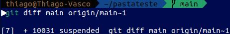
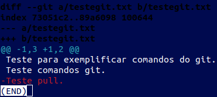
4- git revert
O comando "git revert" é usado para desfazer alterações introduzidas por commits
específicos, criando novos commits que invertem as mudanças desses commits
anteriores. Note que é necessário especificar o commit que você deseja
desfazer, após isso, basta executar o comando e todas as alterações feitas nesse
commit serão revertidas.
Comandos de Inicialização
1- git init
Este comando cria um repositório vazio na pasta em que foi executado, onde o Git
começa a acompanhar todas as mudanças que você faz nos arquivos dentro dessa pasta,
permitindo que você controle o histórico das alterações,volte para versões anteriores e
trabalhe de forma colaborativa com outras pessoas.
Exemplo:
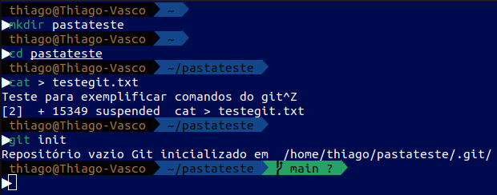
2- git status
Este comando tem a função de mostrar o estado atual do repositório Git, exibindo
informações sobre arquivos modificados, novos arquivos, arquivos prontos para serem
adicionados ao próximo commit e outras informações relevantes para o controle de versão.
Exemplo:
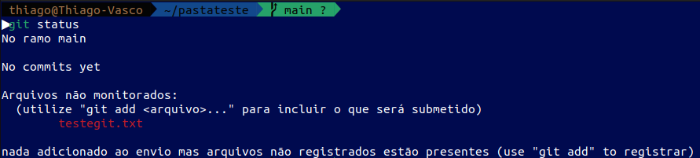
Observação:
Note que, mesmo após a inicialização do repositório Git, o arquivo que criamos
ainda não está sendo monitorado pelo sistema de controle de versões.
3- git add
Este comando tem a função de adicionar arquivos ao sistema de controle de versões,
após adicionados, o Git irá monitorar todas as mudanças ocorridas desde o último
commit realizado, também é utilizado para "programar" mudanças nos arquivos antes de
adicioná-los ao repositório remoto com mais um commit.
Exemplo:
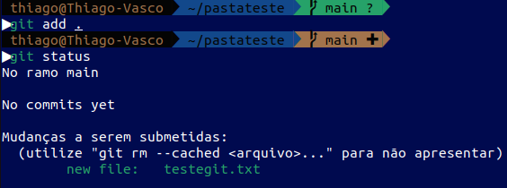
É importante ressaltar que esse comando pode ser aplicado de diferentes formas, como:
1- git add arq1.txt arq2.txt - Adicionando somente os arquivos desejados ao sistema de
controle de versões.
2- git add *.txt - Que adiciona todos os arquivos do tipo selecionado.
3- git add . - Esse comando adiciona todos os arquivos existentes na pasta ao sistema
de controle de versões.
4- git commit
Este comando tem a função de salvar o estado atual dos seus arquivos no repositório
git. É comum e boa prática executar o comando git commit -m "mensagem" a fim de
explicar paraos outros desenvolvedores de seu projeto a mudança que foi feita no arquivo.
Exemplo:
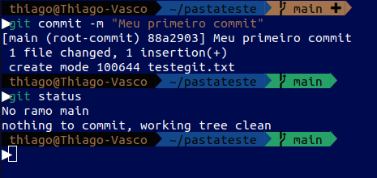
Note que agora o estado atual do repositório Git foi salvo, podendo ser restaurado a qualquer
momento.
Controle de Repositório / Repositório Remoto
1- git remote
Com esse comando, você pode associar seu repositório local Git a um repositório na nuvem
do Github. É importante destacar que "git remote" tem inúmeras funções e usos no
cotidiano de um programador, podendo ser usado como:
git remote -v: Exibe os nomes e URLs de todos os repositórios remotos configurados.
git remote add origin <url> Adiciona um novo repositório remoto chamado
'origin' com o URL especificado.
git remote rename origin upstream: Renomeia o repositório remoto 'origin' para
'upstream'.
git remote remove origin: Remove o repositório remoto chamado 'origin' do seu
projeto Git.
* Antes de demonstrar um exemplo prático, vamos ao comando git push, o "maior aliado"
do git remote.
2- git push
O comando git push é usado para enviar commits locais para um repositório remoto.
Ele atualiza o repositório remoto com as alterações que você fez no seu repositório
local.
Exemplo:
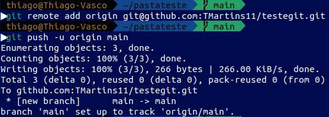
Note que antes de enviar o repositório local a um ambiente remotoé necessário o uso do
comando git remote. Após seguir estas instruções, você já poderá observar seu
repositório no github.
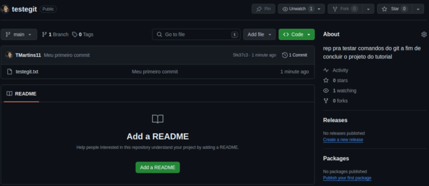
3- git fetch
O comando git fetch é usado para buscar as últimas alterações do repositório remoto para
o seu repositório local. Quando você executa git fetch, o Git busca todas as
alterações feitas no repositório remoto desde a última vez que você sincronizou. No entanto,
ele não mescla essas alterações com o seu trabalho atual, apenas atualiza as referências
locais para refletir o estado atual do repositório remoto. Isso permite que você
veja o que mudou no repositório remoto sem mesclar imediatamente as alterações com o seu
trabalho local.
Exemplo:
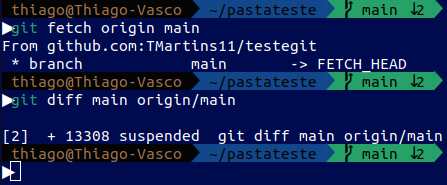
* Utilizamos o comando "git diff", já demonstrado anteriormente, para conferir as mudanças no
repositório remoto:
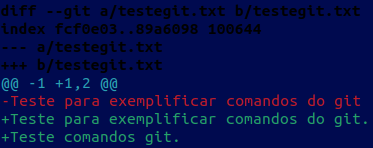
4- git merge
O comando git merge é usado para integrar as alterações de uma branch para outra no
Git. Quando você executa git merge, o Git combina as alterações das duas
branches, aplicando as alterações da branch de origem na branch de destino. Com
as
alterações mescladas e consolidadas na branch de destino, é possível trabalhar em
equipe,
combinando o trabalho feito em diferentes linhas de desenvolvimento dentro do
mesmo projeto.
Exemplo:
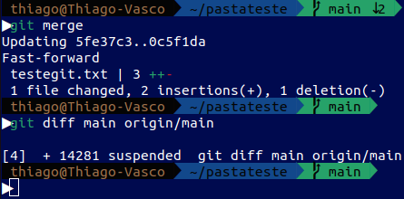
* Observe que agora não existem diferenças entre o repositório local e o repositório remoto:
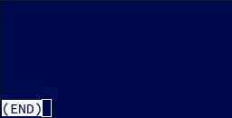
5- git pull
O comando git pull atua como uma fusão dos comandos git fetch e git merge, ele
'puxa' a versão desejada do repositório remoto e integra diretamente no seu projeto
local. Seu uso mais comum é para atualizar seu repositório local com as
alterações mais recentes do projeto remoto, porém, também é possível puxar
versões passadas especificando o commit desejado.
Exemplo:
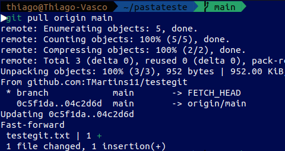
* Note que agora o repositório local está atualizado como o repositório remoto:
Antes:
Depois:
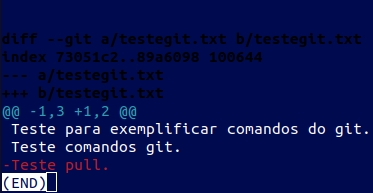
6- git clone
O comando `git clone` cria uma cópia local de um repositório Git remoto. Baixando
todos os arquivos e histórico de commits do repositório remoto para o seu sistema local,
permitindo que você trabalhe nele ou contribua para ele.
Exemplo:
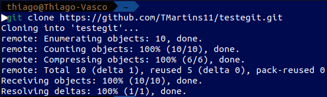
* É necessário possuir uma URL para clonar um repositório, podendo ser ela em formato
HTTPS, SSH ou Github CLI. Você pode encontrá-la clicando no botão code, presente na página
do repositório no Github, ele exibirá todas as chaves para clonar o projeto
localmente.
7- git branch
O comando "git branch" é usado para listar, criar ou deletar branches em
um repositório Git. Se usado sem argumentos, ele lista todas as branches
presentes no repositório, destacando a atual com um asterisco (*). Para criar
uma nova branch, você
usa "git branch <nome-da-branch>. E para deletar uma branch, é " git
branch -d <nome-da-branch>".
Exemplo:
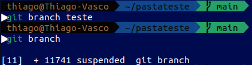
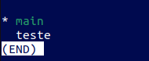
8- git checkout
O comando "git checkout" é comumente usado no Git para alternar entre diferentes
branches, lembre-se que é necessário especificar a branch que você deseja acessar.
Vale também destacar que ele pode ser usado para criar novas branches a partir de commits
específicos e para restaurar arquivos em um estado anterior. Contudo, não é tão
comumente aplicado para esses fins, devido a existência de outros comandos mais
direcionados, como o git revert.